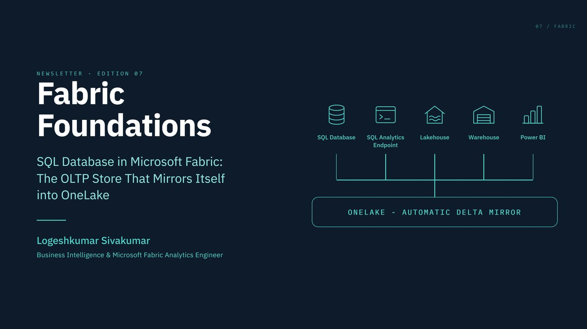
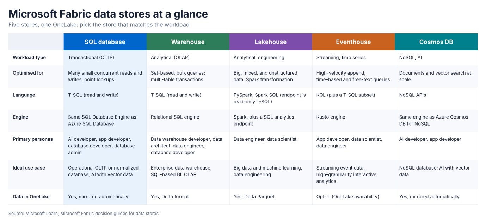

SQL Database in Microsoft Fabric: The OLTP Store That Mirrors Itself into OneLake
Logeshkumar Sivakumar · November 10, 2026 · 5 min read

SQL database in Microsoft Fabric is the platform’s transactional (OLTP) store, built for applications that write many small transactions at once. It mirrors its data into OneLake as Delta Parquet automatically, so operational data becomes analytics-ready without an ETL pipeline.
Here is the situation that exposes the gap. An app writes thousands of small orders a minute, and the business wants dashboards on the same data. Most people reach for the Warehouse or the Lakehouse. Both are analytical engines, and you have just handed them a transactional job.
What is SQL database in Microsoft Fabric?
SQL database in Microsoft Fabric is a fully managed transactional relational database that lives as an item in a Fabric workspace and runs on the same SQL Database Engine as SQL Server. It is closely related to Azure SQL Database, so your T-SQL, stored procedures, views and functions carry straight over.
Create one and Fabric provisions two things: the database itself, and a SQL analytics endpoint. No servers, no patching. Indexing and tuning are handled for you.
Why put an OLTP database inside an analytics platform?
Because the operational database usually lives somewhere else, and getting its data into analytics means building pipelines and then babysitting them. That is cost, latency and a steady source of breakage.
Put the database on the same storage layer and the gap closes. You stop building ETL just to analyse operational data. And analytics queries never touch the transactional database, so a heavy report cannot slow the app down.
How does the mirroring into OneLake work?
Mirroring starts the moment the database is created. No action, no settings. Every supported table and its supported columns are mirrored as soon as they exist, and the mirroring cannot be turned off.
A replication engine reads the SQL engine’s change feed, captures inserts, updates and deletes, and writes them into OneLake as Delta Parquet in near real time. The transactional data stays in .mdf files. The SQL analytics endpoint points at the Delta copy, and that copy is read-only.
Try an INSERT through the endpoint and it refuses. That refusal is the design. It protects operational data from accidental writes.
From there, mirrored tables behave like any other Fabric data. Create views on the endpoint, join across Warehouse and Lakehouse tables in the same workspace, or read them from notebooks and shortcuts.
When should you choose SQL database over a Warehouse?
Choose SQL database when the workload is transactional: many small concurrent reads and writes, point lookups. The Warehouse also supports T-SQL writes, which is exactly why people get this one wrong. It is an analytical engine built for bulk, set-based work. Fabric’s own data store decision guide sends OLTP workloads to SQL database.
The comparison below puts all five Fabric data stores side by side. Every one of them lands its data in OneLake, and each is tuned for a different job.

Four patterns make the choice concrete:
- Intelligent applications and AI, using vector data types and vector search
- Reverse ETL, pushing curated analytical results back into the operational store
- Operational data store, a near real-time, harmonized store across source systems
- Translytical applications, where one dataset serves both writes and analysis
Reverse ETL is the one BI people underestimate. A churn score sitting in a Lakehouse helps nobody until the CRM can read it.
What mistake does this save you from?
Building a pipeline to copy the database into OneLake. Mirroring already lands that data, so the pipeline only duplicates it.
Before the next design review asks “which store?”, ask a simpler question first: does this workload write, or only read? Subscribe to Fabric Foundations for the next edition.
Previous in this series: Fabric Warehouse: What it is for, and when read-only stops being enough
References:
- SQL database in Microsoft Fabric: learn.microsoft.com
- Mirroring Fabric SQL database in Microsoft Fabric: learn.microsoft.com
- Microsoft Fabric decision guide: choose a data store: learn.microsoft.com
#SQLDatabaseInFabric #OLTP #Mirroring #OneLake #DeltaLake #MicrosoftFabric #DataEngineering #PowerBI
Post content
𝐒𝐐𝐋 D𝐚𝐭𝐚𝐛𝐚𝐬𝐞 𝐢𝐧 𝐅𝐚𝐛𝐫𝐢𝐜 is a fully managed transactional database that lives inside your workspace.
Most Fabric developers learn the analytical stores first. Then an app team shows up needing thousands of small writes a minute, and none of those stores fit.
That’s the real gap. Not how to query data. It’s knowing what SQL database in Fabric is, and when it is the right store.
Inside this edition of 𝗙𝗮𝗯𝗿𝗶𝗰 𝗙𝗼𝘂𝗻𝗱𝗮𝘁𝗶𝗼𝗻𝘀:
1️⃣ What SQL database in Fabric is, and what gets provisioned when you create one
2️⃣ Why the Warehouse is the wrong backend for a transactional app, even though it accepts writes
3️⃣ The four patterns: AI apps, reverse ETL, operational data store, translytical
4️⃣ How operational data becomes analytics ready without an ETL pipeline
If you’ve ever wondered where the application database fits in Fabric, this one’s for you.
Same engine as SQL Server. Full T-SQL. No servers to run.
Read the new edition of 𝗙𝗮𝗯𝗿𝗶𝗰 𝗙𝗼𝘂𝗻𝗱𝗮𝘁𝗶𝗼𝗻𝘀 and subscribe for the next one
Microsoft Microsoft Fabric Power BI #SQLDatabaseInFabric #OLTP #Mirroring #OneLake #DeltaLake #MicrosoftFabric #DataEngineering #PowerBI